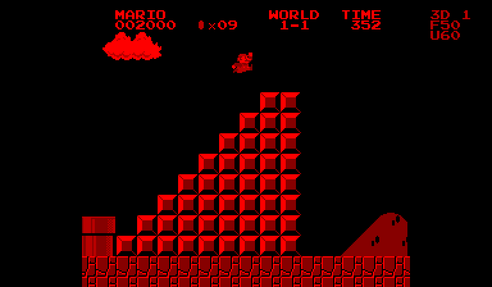
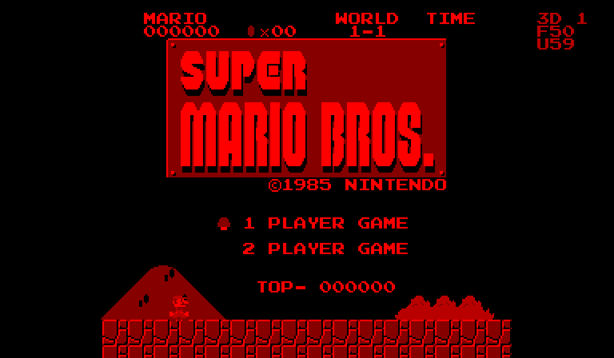
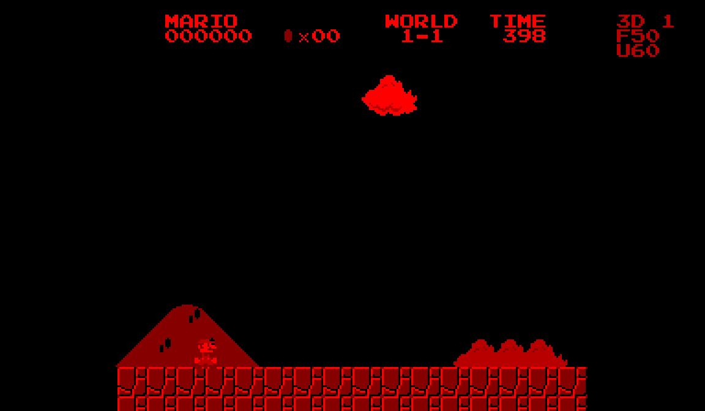
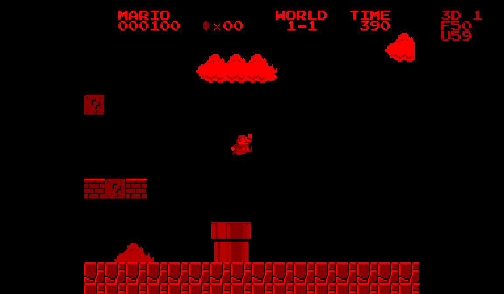
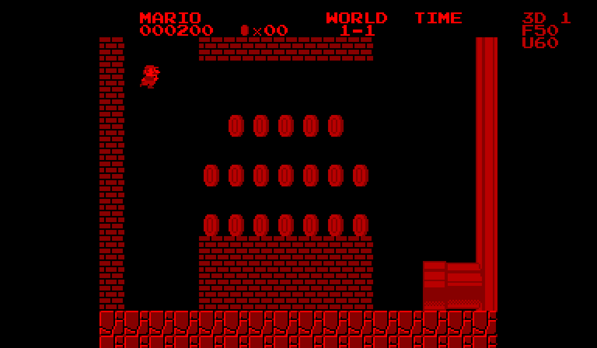
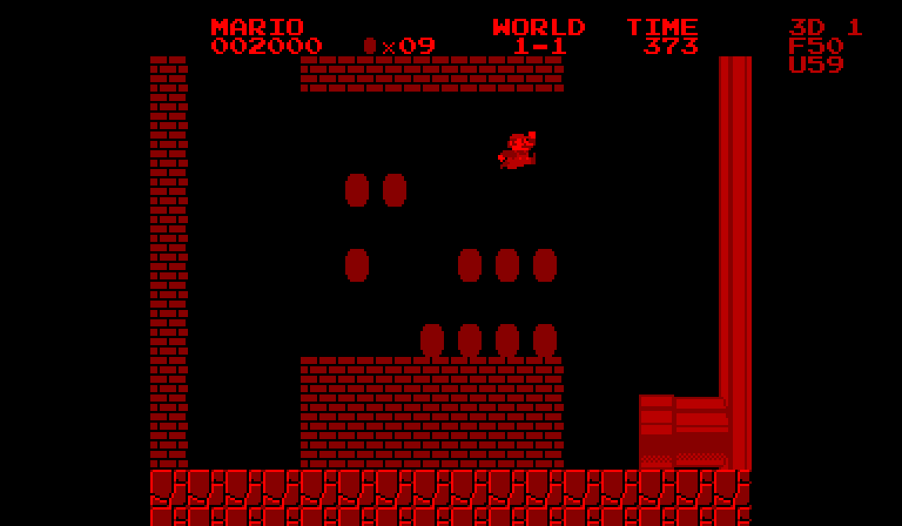
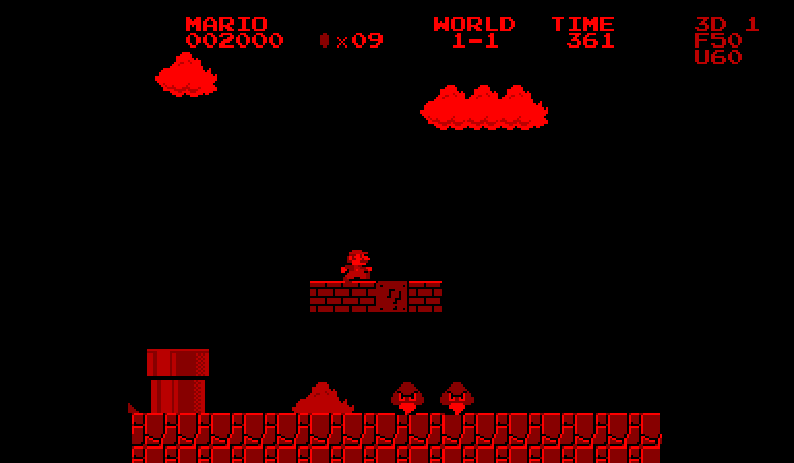
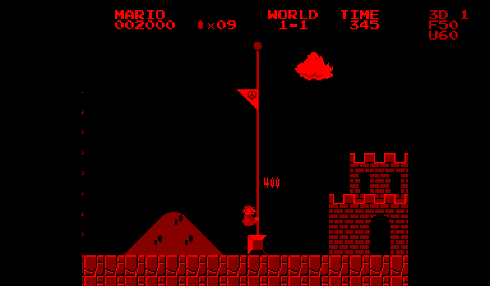
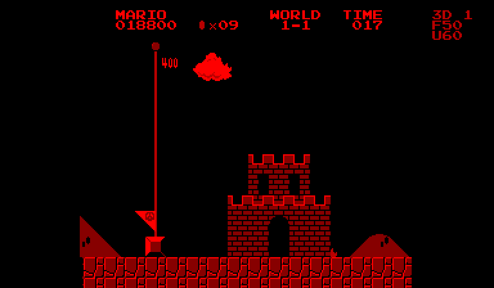
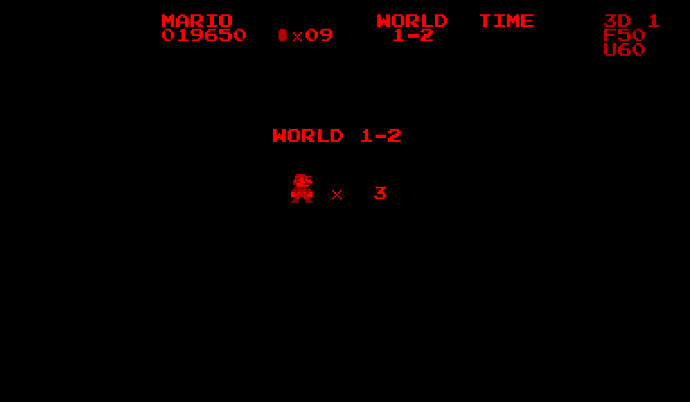

{kind=link}
{kind=link}
{kind=link}
{kind=link}
{kind=link}
{kind=link}
{kind=link}
{kind=link}
{kind=link}
{kind=link}
A Virtual Boy executable
The supplied 256 KiB cartridge runs V810 gameplay code. It adapts the SMB Vanilla C reconstruction and renders through the Virtual Boy’s VIP, with sound translated to VSU voices.
A FAMILIAR WORLD. A DIFFERENT DIMENSION.
Super Mario Bros., running as a native Virtual Boy cartridge. Follow the opening level from the first jump to the castle, with stereo depth and the original level layout.
Watch the full playthrough ↗
THE PLAYTHROUGH
A tool-assisted controller replay of the unmodified cartridge. Recorded from boot, including the underground shortcut, flagpole, castle tally and World 1-2 screen.
The side-by-side version preserves both eye views. Pixel scaling uses nearest-neighbor sampling. No artificial stereo, generated gameplay or interpolated frames.
FRAME BY FRAME
Screenshots taken directly from this recording. Open any frame at full size.

SMB1 Stereo title01.99s
World 1-1 begins05.47s
Opening pipe jumps08.71s
The underground shortcut14.94s
Collecting coins17.15s
Back above ground26.14sThe final staircase29.84s
Flagpole reached32.96s
Castle and score tally40.92s
World 1-2 unlocked45.30sINSIDE THE CONVERSION
The supplied 256 KiB cartridge runs V810 gameplay code. It adapts the SMB Vanilla C reconstruction and renders through the Virtual Boy’s VIP, with sound translated to VSU voices.
Clouds sit behind hills and bushes. Mario, enemies and solid geometry share a collision plane; the HUD sits forward. This run uses the default depth setting of 1.
V3 targets 60 gameplay updates per second independently of drawing. The emulator reports 50.27 display frames per second; the video follows that display timing.
Every replay frame was checked for the death routine and lost lives. The run finishes on World 1-2 with three lives and a score of 19,650. This is emulator evidence, not a physical-hardware test.
Keyboard mappings for the bundled Windows Mednafen launcher.
| Action | Keyboard | Virtual Boy |
|---|---|---|
| Move / enter pipes | Arrow keys | Left D-pad |
| Jump / swim | X | A |
| Run / fire | Z | B |
| Start / pause | Enter | Start |
| Select players | Right Shift | Select |
| Adjust depth | Page Up / Down | Right D-pad ↑ / ↓ |
Beetle VB emulates the supplied V3 ROM. A fixed sequence of ordinary controller inputs is replayed from startup, and every display frame and audio sample is captured. The final recording uses no save-state loads, RAM writes, gameplay patches or splices. This is a demonstration, not a leaderboard speedrun.
The route takes the underground pipe shortcut, so it completes World 1-1 without traversing every overworld tile. The route was informed by Saradoc’s Any% guide, then adapted to this conversion through test replays. It does not claim the guide’s optimal time.
Monochrome graphics, cropped NES overscan and VSU audio translation differ from NES output. The project’s previous 32-level checks verified loading and rendering; this recording verifies completion of World 1-1 only. Physical V3 hardware timing remains unconfirmed.
Read full documentation · Capture report · Exact input sequence
SOURCES & ACKNOWLEDGMENTS
Super Mario Bros. © Nintendo. Unofficial personal conversion; no affiliation or endorsement. This showcase distributes footage and documentation, not the game ROM or extracted game assets.